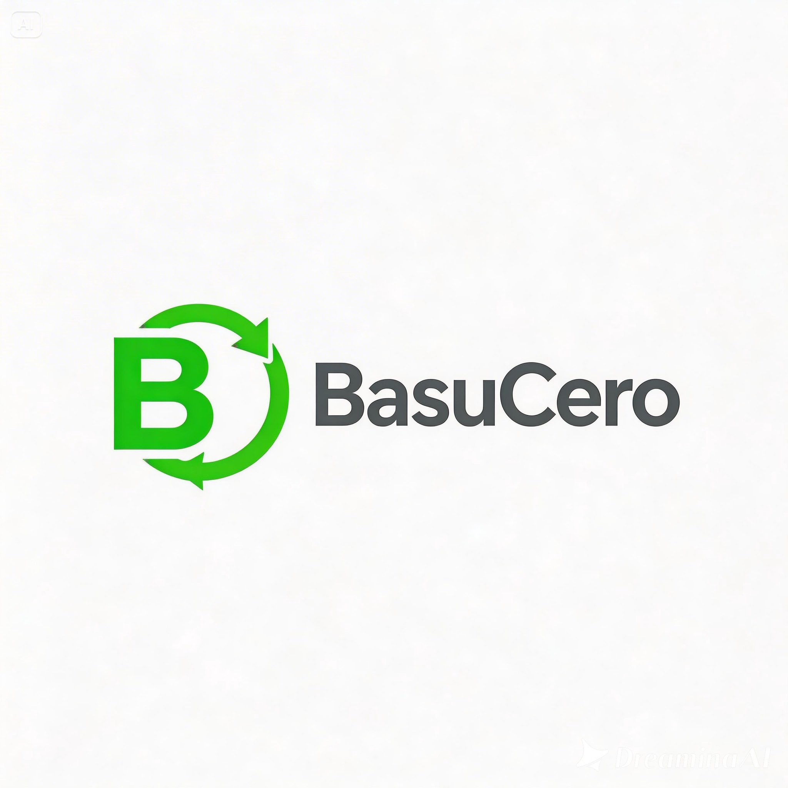

BasuCeroBasuCero recompensa tus acciones ecológicas. Cada residuo reciclable se convierte en beneficios reales.
Residuos reciclados
Usuarios activos
Árboles protegidos
Plástico, vidrio, metal, cartón.
Encuentra el más cercano.
Peso + tipo = puntos.
Descuentos, productos sostenibles.
Escanea el QR con tu móvil. La otra persona verá una página con los puntos ganados.
Economía circular.
Puntos con valor real.
Estadísticas para empresas.
Fácil expansión.